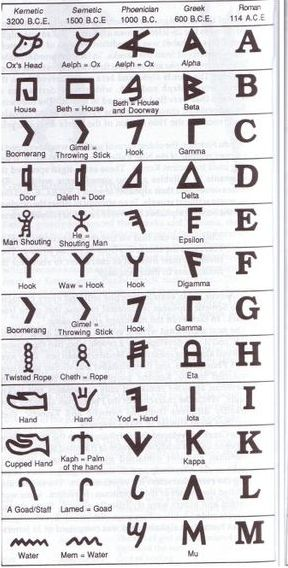

Sciences
Published 1 mn ago 5 min read 3 commentsAnd Kemet offered humankind the writing…
It is everywhere taught that the first writing ever is the Sumerian writing – Mesopotamia – which appeared in 3300 BC. But the researches of the Germanic Institute of Archeology led by Gunter Dreyer enabled to grant this determining invention for humankind to whom may concern, it is to say Blacks of Africa.
The world’s oldest writing. This writing is from Black Africa.
The world’s oldest writing. This writing is African (Source : Grammaire simplifiée de l’égyptien hiéroglyphique, René Louis Parfait Etilé, page 14). The eminent Congolese linguist Theophile Obenga teaches us that Phoenicians, who were the first Black inhabitants of the Near East, originating from Africa, used to say that writing had been created by Egyptians and transmitted to them. The Greek savant Diodorus reported that Nubians – from southern Egypt-Sudan – had told him that it was from them that their Egyptians descendants had inherited writing [1]. The Germanic Institute of Archeology discovered in Abydos, in the south of Egypt, the oldest track of writing of the history of humanity. The inscriptions discovered by that team enabled to date to -3400 the hieroglyphs that had been found there [2].
Tablets from in Uruk and Akkad in Mesopotamia show a type of ‘writing’ dating from -3200 BC. The problem is that this ‘writing’ doesn’t express sounds. Therefore it’s not writing. If one compares that with Africa, we have the Lebombo bone found in Swaziland and that is the first proof of mathematics of humanity. The inscriptions on the Lebombo bone date from -37000. It should therefore be compared -37,000 to -3,200. The authentic Sumerian writing dates from -3060. And the said Sumerians were Blacks.
Source : presentation of Upahotep Kajor Mendi; Ubuntu Mboa 6250 Sumerian writing, 2600 BC:

Writing was taken to Greece by the Phoenicia’s Blacks led by Cadmus after they settled there around -1450 ; and this information was confirmed by the ancient Greeks themselves. It was then through contact with the Black civilizers of the Near East originating from Africa that Europe had for the first time a writing around the 9th century BC; it is to say almost 2600 years at least after Africa. It is that Greek alphabet which gave birth to the current Latin one we used to write this article. The French historian and epigraph Pierre Bordreuil, experienced researcher at the CNRS (France) says ‘what’s extraordinary with the Phoenician alphabet is that it is the ancestor of our alphabets’ [3].
As the European writing is originating from the Phoenician writing and the Phoenician writing is originating from the African one, the European writing is therefore originating from the African one.
THE AFRICAN ORIGIN OF THE EUROPEAN WRITING
1. Egyptian 2. Proto-Sinaic, an Egyptian writing invented 3500 years ago 3. Phoenician 4. Greek 5. Roman ((Illustration data authenticated (L’Afrique Impériale, Nioussérê Kalala Omotunde, page 26)) Hotep!
SOURCE: Lisapo ya Kama © (All rights reserved. Any copying or translation of the text of this article is strictly forbbiden without the written approval of Lisapo ya Kama)
Notes :
Afrique, berceau de l’écriture; Ankh magazine n°7/8 Department of Mathematics of Buffalo University Nations Nègres et Culture, Cheikh Anta Diop [1] Antériorité des civilisations nègres, Cheikh Anta Diop, page 38 [2] Grammaire simplifiée de l’Egyptien hyéroglyphique; René Louis Parfait Etile, page 14 [3] A l’origine de l’alphabet, les phéniciens, RFI.